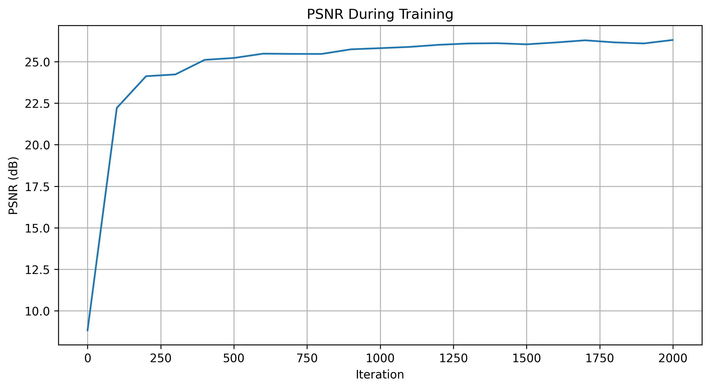
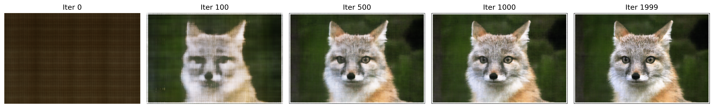
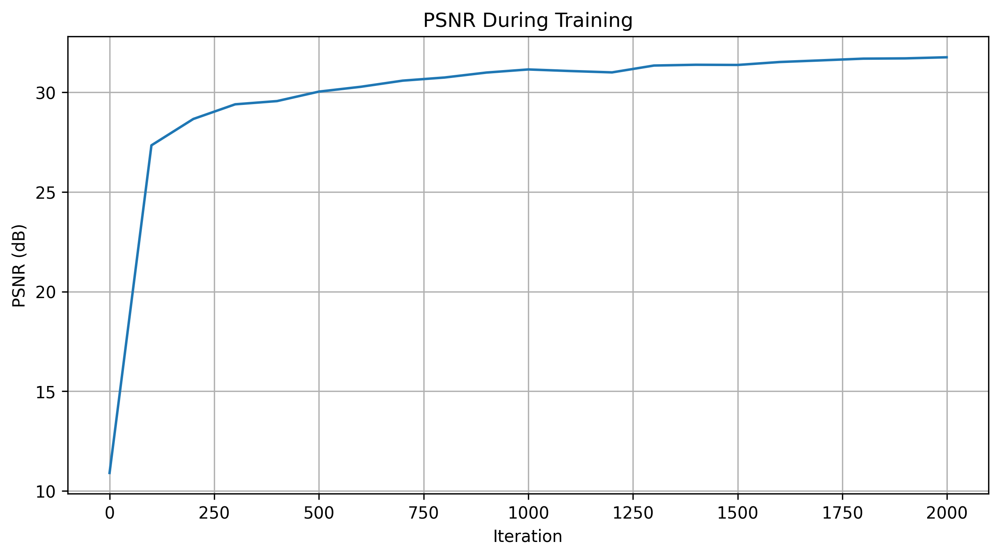
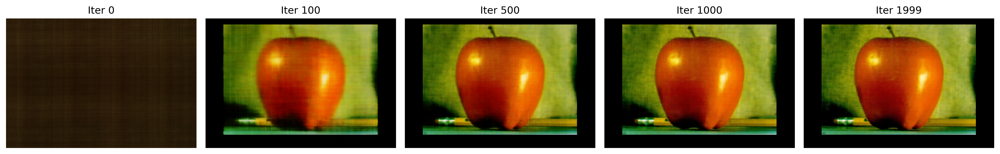

Neural Radiance Field
Part1: Fit a Neural Field to a 2D Image
Model Architecture
The model is a neural field network designed to map 2D coordinates to RGB color values. The architecture is as follows:
Positional Encoding: The input 2D coordinates are first transformed using a positional encoding function. This function applies a series of sine and cosine transformations to the coordinates, effectively increasing the dimensionality of the input and allowing the model to capture high-frequency details.
Neural Network Structure:
Input Layer: The input to the network is the positionally encoded coordinates.
Hidden Layers: The network consists of three hidden layers, each with a ReLU activation function. The number of neurons in each hidden layer is determined by the hidden_dim hyperparameter.
Output Layer: The final layer outputs three values, corresponding to the RGB color channels, and applies a Sigmoid activation function to ensure the outputs are in the range [0, 1].
Hyperparameters
For the training process, the following hyperparameters were chosen:
Hidden Dimension (hidden_dim): This determines the number of neurons in each hidden layer. Various values were tested, including 64 and 256.
Positional Encoding Layers (pos_encoding_L): This parameter controls the number of sine and cosine transformations applied to the input coordinates. Values of 5 and 10 were explored.
Learning Rate: A learning rate of 0.01 was used for the Adam optimizer.
Batch Size: A batch size of 10,000 coordinates was used for each training iteration.
Number of Iterations: The model was trained for 2000 iterations.

Training Process and Results
PSNR Curve: The Peak Signal-to-Noise Ratio (PSNR) was calculated at regular intervals during training to monitor the model's performance. The PSNR curve showed a steady increase, indicating that the model was learning to reconstruct the image more accurately over time.
Visualization of Predicted Images: During training, the predicted images were visualized at various iterations. Initially, the predictions were noisy and lacked detail, but as training progressed, the images became clearer and more closely resembled the target image.


Additional Experiment
The optimization process was also run on another image from the collection. A single set of hyperparameters was chosen for this experiment, and the PSNR curve was plotted to show the model's performance over time. The visualization of the training process demonstrated similar improvements in image quality as seen in the initial experiment.


Hyperparameter Tuning
A hyperparameter tuning process was conducted to identify the best combination of hidden_dim and pos_encoding_L. Multiple configurations were tested, and the results were compared based on the final PSNR values. The tuning process helped in selecting the optimal hyperparameters that provided the best balance between model complexity and performance.

Part2: Fit a Neural Radiance Field from Multi-view Images
Part 2.1: Create Rays from Cameras
Camera to World Coordinate Conversion
transform(c2w, x_c)
This function transforms a point from the camera coordinate system to the world coordinate system using the camera-to-world transformation matrix (c2w). The transformation involves converting the point to homogeneous coordinates, applying the transformation matrix, and then converting back to non-homogeneous coordinates.
def transform(c2w, x_c): x_h = torch.cat([x_c, torch.ones_like(x_c[..., :1])], dim=-1) # [..., 4] x_w_h = torch.matmul(c2w, x_h.unsqueeze(-1)) # [..., 4, 1] x_w = x_w_h[..., :3, 0] # [..., 3] return x_wPixel to Camera Coordinate Conversion
pixel_to_camera(K, uv, s)
This function calculates the ray origin and direction for a given pixel. The ray origin is the camera position, and the direction is computed by transforming a point with depth 1 from the camera to the world space. The direction is then normalized.
def pixel_to_camera(K, uv, s): K_inv = torch.inverse(K) uv_homogeneous = torch.cat([uv, torch.ones_like(uv[..., :1])], dim=-1) x_c_homogeneous = torch.matmul(K_inv, uv_homogeneous.unsqueeze(-1)).squeeze(-1) x_c = x_c_homogeneous * s return x_cPixel to Ray Conversion
pixel_to_ray(K, c2w, uv)
This function calculates the ray origin and direction for a given pixel. The ray origin is the camera position, and the direction is computed by transforming a point with depth 1 from the camera to the world space. The direction is then normalized.
def pixel_to_ray(K, c2w, uv): ray_o = c2w[..., :3, 3] x_c = pixel_to_camera(K, uv, torch.ones_like(uv[..., :1])) x_w = transform(c2w, x_c) ray_d = x_w - ray_o ray_d = ray_d / torch.norm(ray_d, dim=-1, keepdim=True) return ray_o, ray_dPart 2.2: Sampling
Sampling Rays from Images
This involves sampling rays from multiple images. Two strategies can be used: sampling a fixed number of rays from a subset of images or globally sampling rays from all images. The pixel coordinates are adjusted to account for the offset to the pixel center.
def sample_rays(images, c2ws, K, N_rays, strategy='per_image'): N, H, W = images.shape[:3] if strategy == 'per_image': image_indices = torch.randperm(N)[:N_rays // H // W] rays_per_image = N_rays // len(image_indices) all_ray_o, all_ray_d = [], [] for idx in image_indices: uv = torch.rand(rays_per_image, 2) * torch.tensor([W, H]) + 0.5 ray_o, ray_d = pixel_to_ray(K, c2ws[idx], uv) all_ray_o.append(ray_o) all_ray_d.append(ray_d) ray_o = torch.cat(all_ray_o, dim=0) ray_d = torch.cat(all_ray_d, dim=0) else: pass return ray_o, ray_dSampling Points along Rays
This process involves discretizing each ray into multiple sample points in 3D space. Uniform sampling is performed between a near and far plane, with optional perturbation added during training to prevent overfitting.
def sample_along_rays(ray_o, ray_d, near=2.0, far=6.0, n_samples=64, perturb=True): t = torch.linspace(near, far, n_samples) if perturb: t_width = (far - near) / (n_samples - 1) t = t + (torch.rand(t.shape) * t_width) t = t.unsqueeze(0).expand(ray_o.shape[0], n_samples) pts = ray_o[..., None, :] + ray_d[..., None, :] * t[..., :, None] return pts, t